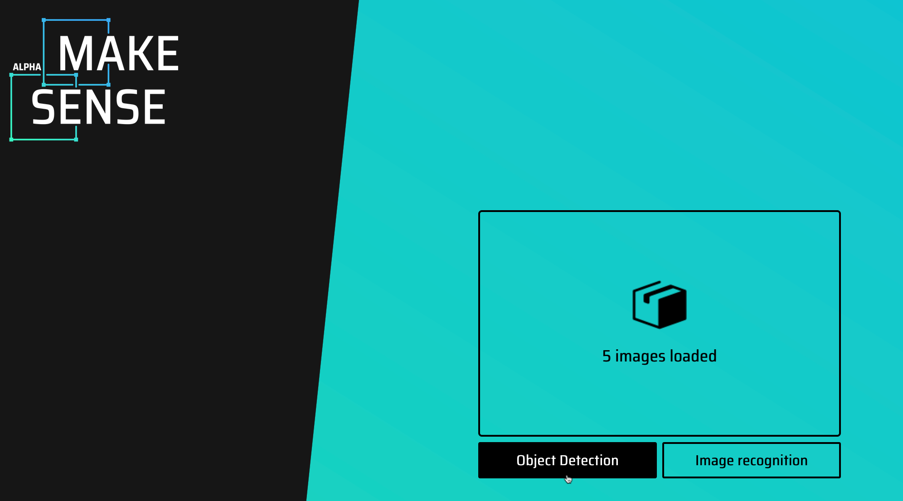

YOLO
Table of Contents
1. YOLO
YOLO(You Only Look Once)是一種即時物件檢測系統,它的目標是在要一張圖片中檢測出所有的物件,並且給出每個物件的邊界框和類別標籤. YOLO的特點是速度快, 準確率高, 適合實時(real-time)應用。
1.1. YOLO的歷史
YOLO最早是由Joseph Redmon等人於2015年提出的, 其後經過多次改進, 包括YOLOv2、YOLOv3、YOLOv4、YOLOv5、YOLOv6、YOLOv7, YOLOv8…. YOLO系列模型在物件檢測領域取得了很大的成功, 並且被廣泛應用於各種實際場景中.
YOLO系列模型的發展歷程如下1:
- YOLOv1 (2015) Joseph Redmon: You Only Look Once: Unified, Real-Time Object Detection
- YOLOv2 (2017) Joseph Redmon: YOLO9000: Better, Faster, Stronger
- YOLOv3 (2018) Joseph Redmon YOLOv3: An Incremental Improvement
- YOLOv4 (2020) Alexey Bochkovskiy, Chien-Yao Wang(中研院王建堯), Hong-Yuan Mark Liao: YOLOv4: Optimal Speed and Accuracy of Object Detection
- 2020 年 Joseph Redmon 突然投下了一枚震撼彈，他受夠 YOLO 不斷被運用在軍事應用以及個人隱私，宣布停止電腦視覺相關的研究。
- YOLOv5 (2020) Glen Jocher
- PP-YOLO (2020) Xiang Long et al.: PP-YOLO: An Effective and Efficient Implementation of Object Detector
- YOLOZ (2021) Aduen Benjumea et al.: YOLO-Z: Improving small object detection in YOLOv5 for autonomous vehicles
- YOLO-ReT (2021) Prakhar Ganesh et al.: YOLO-ReT: Towards High Accuracy Real-time Object Detection on Edge GPUs
- Scaled-YOLOv4 (2021) Chien-Yao Wang et al. Scaled-YOLOv4: Scaling Cross Stage Partial Network’
- YOLOX (2021) Zheng Ge et al. YOLOX: Exceeding YOLO Series in 2021
- YOLOR (2021) Chien-Yao Wang et al. You Only Learn One Representation: Unified Network for Multiple Tasks
- YOLOS (2021) Yuxin Fang et al. You Only Look at One Sequence: Rethinking Transformer in Vision through Object Detection
- YOLOF (2021) Qiang Chen et al. You Only Look One-level Feature
- YOLOP (2022) Dong Wu et al. YOLOP: You Only Look Once for Panoptic Driving Perception
- YOLOv6 (2022) 美团技术团队
- YOLOv7 (2022) Chien-Yao Wang(中研院王建堯), Alexey Bochkovskiy, Hong-Yuan Mark Liao(中研院資訊所所長廖弘源): Trainable bag-of-freebies sets new state-of-the-art for real-time object detectors
- YOLOv8(2023): Ultralytics
- YOLOv9(2024) Chien-Yao Wang(中研院王建堯), I-Hau Yeh(國立臺北科技大學電子工程系葉儀晧), Hong-Yuan Mark Liao(中研院資訊所所長廖弘源): YOLOv9: A New Era of Object Detection
- 世界最快的AI視覺辨識，來自台灣！中研院資訊所所長廖弘源如何催生YOLO？
- YOLOv10(2024) Ao Wang, Hui Chen, Lihao Liu, Kai Chen, Zijia Lin, Jungong Han, Guiguang Ding: YOLOv10: Real-Time End-to-End Object Detection
- YOLOv11(2024) Rahima Khanam, Muhammad Hussain: YOLOv11: An Overview of the Key Architectural Enhancements
- YOLOv12(2025) Yunjie Tian, Qixiang Ye, David Doermann: YOLOv12: Attention-Centric Real-Time Object Detectors
1.2. YOLO工作原理
YOLO的特點是將物件檢測視為一個回歸問題, 直接從圖像像素到邊界框和類別概率的映射, 這樣可以實現即時檢測. YOLO的網路結構是基於全卷積網路(FCN), 將整張圖像分成SxS的格子, 每個格子預測B個邊界框和C個類別概率. YOLO的優點是速度快, 準確率高, 適合實時應用.
1.3. YOLO8
目前YOLO的最新版本為YOLO12, YOLOv12是一個最新的物件偵測模型，具有創新的注意力機制架構，顯著提升了速度和準確性。為了配合403教室沒有GPU且執行效能令人哀傷的Mac Mini，這裡使用的是YOLOv8的輕量級版本，這個版本的模型大小和運算量都比YOLOv7小得多，適合在資源有限的環境中使用。
Yolov8 跟 Yolov5 都是由 Ultralytics 開發，一樣是使用 PyTorch 去做訓練，提供三大類型的訓練方式2 :
- 物件偵測（Object Detection）
- 實例分割（Instance Segmentation）
- 影像分類（Image Classification）
Ultralytics 官方的預訓練模型（如 yolov8n.pt, yolov8s.pt, yolov8m.pt 等）使用 COCO dataset 訓練的，預設可以識別的物件類別：80 種，包括人、動物、交通工具、家具、電器等:
- person, bicycle, car, motorcycle, airplane, bus, train, truck
- bird, cat, dog, horse, sheep, cow, elephant, bear, zebra, giraffe
- backpack, umbrella, handbag, tie, suitcase
- bottle, wine glass, cup, fork, knife, spoon, bowl
- TV, laptop, mouse, remote, keyboard, cellphone
完整清單可參見：
1: from ultralytics import YOLO 2: model = YOLO('yolov8n.pt') #從 Ultralytics 自己托管的伺服器下載模型 3: print(model.names)
{0: 'person', 1: 'bicycle', 2: 'car', 3: 'motorcycle', 4: 'airplane', 5: 'bus', 6: 'train', 7: 'truck', 8: 'boat', 9: 'traffic light', 10: 'fire hydrant', 11: 'stop sign', 12: 'parking meter', 13: 'bench', 14: 'bird', 15: 'cat', 16: 'dog', 17: 'horse', 18: 'sheep', 19: 'cow', 20: 'elephant', 21: 'bear', 22: 'zebra', 23: 'giraffe', 24: 'backpack', 25: 'umbrella', 26: 'handbag', 27: 'tie', 28: 'suitcase', 29: 'frisbee', 30: 'skis', 31: 'snowboard', 32: 'sports ball', 33: 'kite', 34: 'baseball bat', 35: 'baseball glove', 36: 'skateboard', 37: 'surfboard', 38: 'tennis racket', 39: 'bottle', 40: 'wine glass', 41: 'cup', 42: 'fork', 43: 'knife', 44: 'spoon', 45: 'bowl', 46: 'banana', 47: 'apple', 48: 'sandwich', 49: 'orange', 50: 'broccoli', 51: 'carrot', 52: 'hot dog', 53: 'pizza', 54: 'donut', 55: 'cake', 56: 'chair', 57: 'couch', 58: 'potted plant', 59: 'bed', 60: 'dining table', 61: 'toilet', 62: 'tv', 63: 'laptop', 64: 'mouse', 65: 'remote', 66: 'keyboard', 67: 'cell phone', 68: 'microwave', 69: 'oven', 70: 'toaster', 71: 'sink', 72: 'refrigerator', 73: 'book', 74: 'clock', 75: 'vase', 76: 'scissors', 77: 'teddy bear', 78: 'hair drier', 79: 'toothbrush'}
1.4. YOLOv8 模型種類：
| 名稱 | 大小 | 準確率 | 推理速度 | 適用情境 |
|---|---|---|---|---|
| yolov8n | 小 | 低 | 非常快 | 手機、嵌入式設備 |
| yolov8s | 小 | 中 | 快 | 通用快速識別任務 |
| yolov8m | 中 | 高 | 中 | 準確率與速度平衡 |
| yolov8l | 大 | 更高 | 慢 | 準確率要求較高的任務 |
| yolov8x | 最大 | 最高 | 最慢 | 高準確率、伺服器端推論 |
2. YOLO實作(現成模型)
2.1. 偵測靜態照片
- 安裝所需套件
ultralytics套件是YOLOv8的官方實作，這裡使用的是最新版本的ultralytics套件，這個版本的模型大小和運算量都比YOLOv7小得多，適合在資源有限的環境中使用。
安裝方式如下：
1: pip install ultralytics - 本機執行
1: from ultralytics import YOLO 2: 3: # 載入 YOLOv8 nano 模型 4: model = YOLO("yolov8n.pt") 5: 6: # 對圖片進行推論 7: results = model("/Users/letranger/Downloads/cardog.jpg") # 換成你的圖片檔名 8: results[0].show() 9:
- colab執行
如果在colab上則需要使用以下指令
1: !pip install ultralytics
1: results = model("/content/road.png")
辨識網路上的圖片
1: results = model("https://ultralytics.com/images/bus.jpg", show=True) 2: results[0].show()
2.2. 即時偵測(本機)
OpenCV 是一個跨平台的電腦視覺套件，全名為 Open Source Computer Vision Library。此處我們以OpenCV 來啟用 mac mini 的 webcam，並使用 YOLOv8 進行即時偵測。
以下以403 mac mini上的PyCharm來執行:
1: pip install numpy==1.26.4 2: pip install ultralytics
1: import cv2 2: from ultralytics import YOLO 3: 4: # 載入預訓練模型 5: model = YOLO("yolov8n.pt") 6: 7: # 啟用 MacBook 的內建 webcam 8: cap = cv2.VideoCapture(0) # 0 是預設攝影機裝置 9: 10: # 檢查攝影機是否成功打開 11: if not cap.isOpened(): 12: print("❌ 無法打開攝影機") 13: exit() 14: 15: while True: 16: ret, frame = cap.read() 17: if not ret: 18: print("❌ 無法讀取畫面") 19: break 20: 21: # 進行 YOLO 偵測 22: results = model(frame, verbose=False) 23: annotated_frame = results[0].plot() 24: 25: # 顯示偵測結果 26: cv2.imshow("YOLOv8 Live Detection", annotated_frame) 27: 28: # 按下 q 鍵離開 29: if cv2.waitKey(1) & 0xFF == ord('q'): 30: break 31: 32: # 釋放資源 33: cap.release() 34: cv2.destroyAllWindows() 35:
2.3. OpenCV版的人臉偵測
OpenCV 也可以做人臉辨識（Face Detection / Recognition），而且它還提供兩種層次的功能：
- 人臉「偵測」（Face Detection）
這是找出影像中哪裡有臉（畫框框），常用於攝影機即時預覽或手機臉部對焦功能。常用方法：
- Haar Cascade Classifier（經典、快速，但準確率較低）：
1: face_cascade = cv2.CascadeClassifier(cv2.data.haarcascades + 'haarcascade_frontalface_default.xml') 2: faces = face_cascade.detectMultiScale(gray_frame, scaleFactor=1.1, minNeighbors=5)
- DNN 模型（比較準確）：OpenCV 提供 deploy.prototxt + res10_300x300_ssd_iter_140000.caffemodel 可供載入 DNN 模型做人臉偵測。
- Haar Cascade Classifier（經典、快速，但準確率較低）：
- 2. 人臉「辨識」（Face Recognition）
進一步判斷「這張臉是誰」，需要先進行訓練或比對特徵。
- face_recognition Python 套件（底層仍用 OpenCV 與 dlib）：
- 先建立人臉特徵（encoding）
- 再進行比對
- 先建立人臉特徵（encoding）
1: import face_recognition 2: face_locations = face_recognition.face_locations(image) 3: face_encodings = face_recognition.face_encodings(image, face_locations)
- face_recognition Python 套件（底層仍用 OpenCV 與 dlib）：
2.4. 功能比較（YOLO vs OpenCV）：
| 功能類型 | YOLO | OpenCV |
|---|---|---|
| 物件偵測 | ✅ 強大且支援多類別 | ⚠️ 內建較少（需自己訓練） |
| 人臉偵測 | ✅（需訓練/套件支援） | ✅（Haar/DNN） |
| 人臉辨識 | ❌（原生不支援） | ⚠️（需搭配 dlib/face_recognition） |
| 執行效率 | 高（GPU加速） | 中（較輕量，適合 CPU） |
| 易用性 | 容易（Ultralytics 很友好） | 較基礎（需手動設定） |
1: import cv2 2: 3: # 載入 Haar 人臉偵測模型（OpenCV 內建） 4: face_cascade = cv2.CascadeClassifier(cv2.data.haarcascades + 'haarcascade_frontalface_default.xml') 5: 6: # 開啟攝影機（0 = 預設 webcam） 7: cap = cv2.VideoCapture(0) 8: 9: # 檢查攝影機是否開啟成功 10: if not cap.isOpened(): 11: print("❌ 無法開啟攝影機") 12: exit() 13: 14: while True: 15: # 讀取一張影像 16: ret, frame = cap.read() 17: if not ret: 18: print("❌ 無法讀取畫面") 19: break 20: 21: # 轉成灰階影像（人臉偵測通常在灰階上進行） 22: gray = cv2.cvtColor(frame, cv2.COLOR_BGR2GRAY) 23: 24: # 偵測人臉 25: faces = face_cascade.detectMultiScale(gray, scaleFactor=1.1, minNeighbors=5) 26: 27: # 畫出每一張人臉的位置 28: for (x, y, w, h) in faces: 29: cv2.rectangle(frame, (x, y), (x + w, y + h), (0, 255, 0), 2) 30: 31: # 顯示畫面 32: cv2.imshow("Face Detection (press q to quit)", frame) 33: 34: # 按下 q 鍵結束 35: if cv2.waitKey(1) & 0xFF == ord('q'): 36: break 37: 38: # 釋放資源 39: cap.release() 40: cv2.destroyAllWindows() 41:
3. 現成模型(擴充應用)
3.1. Face Recognition
3.2. 細部屬性辨識（例如：是否戴口罩）
- 目標：偵測到人之後，再判斷是否戴口罩、穿制服、舉手等行為
- 解法：
- 使用 YOLO 自行訓練分類為：
- person_masked
- person_unmasked
- person_masked
- 或搭配另一個 mask classifier 模型判斷臉部特徵
- 使用 YOLO 自行訓練分類為：
3.3. 進一步應用整合方式
| 擴充目標 | 需要模型 | 備註 |
|---|---|---|
| ✅ 辨識是誰 | face_recognition + YOLO | 需建立學生臉部特徵資料庫 |
| 😷 有沒有戴口罩 | YOLO 自訓練 or CNN 分類器 | 可與人臉辨識並用 |
| 🧥 穿什麼衣服顏色 | 圖像特徵分析（color mask） | OpenCV HSV 過濾 |
| 🖐️ 舉手、有動作行為 | Skeleton pose (YOLO-pose) | YOLOv8 支援 pose 模型 |
3.4. YOLO + Face Recognition
這裡用的是face recognition的套件，這個套件是基於dlib的臉部辨識模型，使用了HOG和CNN兩種方法來進行臉部特徵提取和比對。這個套件的優點是簡單易用，並且可以在CPU上運行。但是該套件預設是辨識完整臉部特徵（包含鼻子與嘴巴）戴口罩會遮住 50% 以上的臉部資訊，導致：
- face_encodings() 無法產生有效特徵向量
- 即使產生，也可能無法與原始（無口罩）特徵比對成功
所以，只適合用於辨識「不戴口罩」的臉部特徵，或是「戴口罩」的臉部特徵。
1: pip install face_recognition opencv-python
- 資料準備
各組組員準備5-10張不同角度、光線的自拍照片，命名規則為「姓名_n.jpg」，例如：
- 王小明_1.jpg
- 王小明_2.jpg
- …
- 王小明_9.jpg
，並放在同一個資料夾中。這裡假設資料夾路徑為「/Users/letranger/Downloads/images」。
如果你使用403教室的Mac Mini，請將照片放在「/Users/student/Desktop/images」資料夾中。
- 王小明_1.jpg
- save_encodings.py
1: import face_recognition 2: import os, pickle 3: from PIL import UnidentifiedImageError 4: 5: known_encodings = [] 6: known_names = [] 7: 8: for file in os.listdir("/Users/letranger/Downloads/images"): 9: if file.startswith(".") or not file.lower().endswith((".jpg", ".jpeg", ".png")): 10: continue 11: name = file.split("_")[0] 12: try: 13: img = face_recognition.load_image_file(f"/Users/letranger/Downloads/images/{file}") 14: encodings = face_recognition.face_encodings(img) 15: if encodings: 16: known_encodings.append(encodings[0]) 17: known_names.append(name) 18: except UnidentifiedImageError: 19: print(f"❌ 無法辨識的圖片檔案：{file}") 20: 21: # 儲存特徵與名稱 22: with open("/Users/letranger/Downloads/images/encodings.pkl", "wb") as f: 23: pickle.dump((known_encodings, known_names), f) 24:
- realtime_recognition.py
1: import pickle 2: import cv2, face_recognition 3: from ultralytics import YOLO 4: 5: # 載入特徵資料 6: with open("/Users/letranger/Downloads/images/encodings.pkl", "rb") as f: 7: known_encodings, known_names = pickle.load(f) 8: 9: model = YOLO("yolov8n.pt") 10: cap = cv2.VideoCapture(0) 11: 12: while True: 13: ret, frame = cap.read() 14: results = model(frame) 15: 16: for box in results[0].boxes.xyxy: 17: x1, y1, x2, y2 = map(int, box) 18: face_img = frame[y1:y2, x1:x2] 19: rgb_face = cv2.cvtColor(face_img, cv2.COLOR_BGR2RGB) 20: 21: encodings = face_recognition.face_encodings(rgb_face) 22: if encodings: 23: match = face_recognition.compare_faces(known_encodings, encodings[0]) 24: name = known_names[match.index(True)] if True in match else "Unknown" 25: # 在人臉上方顯示姓名(請自行變更這裡的程式) 26: cv2.putText(frame, name, (x1, y1-10), cv2.FONT_HERSHEY_SIMPLEX, 0.8, (0,255,0), 2) 27: 28: cv2.imshow("Face Recognition + YOLO", frame) 29: if cv2.waitKey(1) & 0xFF == ord('q'): 30: break 31: 32: cap.release() 33: cv2.destroyAllWindows()
3.5. YOLO + Object Detection
YOLOv8 也可以用於物件偵測，這裡使用的是 YOLOv8 的預訓練模型，這個模型已經訓練好了，可以直接用來進行物件偵測。這裡的程式碼是使用 YOLOv8 的預訓練模型來進行物件偵測，並且將檢測到的物件畫在圖片上。
這裡使用的是 YOLOv8 的預訓練模型，這個模型已經訓練好了，可以直接用來進行物件偵測。這裡的程式碼是使用 YOLOv8 的預訓練模型來進行物件偵測，並且將檢測到的物件畫在圖片上。
- 系統環境
假設你的資料夾(/Users/letranger/Desktop/object_dataset)結構如下：
1: /Users/letranger/Downloads/object_dataset 2: ├── images 3: │ ├── train 4: │ └── val 5: └── labels 6: ├── train 7: └── val
- 準備圖片資料
- 準備要拍攝的圖片，每種物件至少要有 10 張圖片，並且將這些圖片分別放到訓練資料夾(train)與驗證資料夾(val)中
- 這裡假設資料夾路徑為「/Users/student/Deskltop/object_dataset/images」。
- 圖片的命名如下:
- dog_1.jpg
- dog_2.jpg
- …
- dog_10.jpg
- cat_1.jpg
- cat_2.jpg
- …
- cat_10.jpg
- dog_1.jpg
分別建立好資料夾，並將圖片放到對應的資料夾中
1: /Users/student/Desktop/object_dataset 2: ├── data.yaml 3: ├── images 4: │ ├── train 5: │ │ ├── CoffeeCup_1.jpg 6: │ │ ├── CoffeeCup_2.jpg 7: .... 8: │ │ ├── CryBaby_1.jpg 9: │ │ ├── CryBaby_2.jpg 10: ... 11: │ └── val 12: │ ├── CoffeeCup_11.jpg 13: │ ├── CoffeeCup_12.jpg 14: ... 15: │ ├── CryBaby_11.jpg 16: │ ├── CryBaby_12.jpg 17: ...
- 準備要拍攝的圖片，每種物件至少要有 10 張圖片，並且將這些圖片分別放到訓練資料夾(train)與驗證資料夾(val)中
- 設定標籤
至https://www.makesense.ai/網站上傳圖片，加入label並且標註每一個物件的邊界框

Figure 1: Caption
- 下載標註好的資料。
選擇 Export Annotations

Figure 2: Caption
以YOLO格式下載，並解壓縮檔案

Figure 3: Caption
- train與val的資料分別上傳、標註、下載，然後把下載的txt移至labels中
1: /Users/letranger/Downloads/object_dataset 2: ├── data.yaml 3: ├── images 4: │ ├── train 5: │ │ ├── CoffeeCup_1.jpg 6: │ │ ├── CoffeeCup_2.jpg 7: .... 8: │ │ ├── CryBaby_1.jpg 9: │ │ ├── CryBaby_2.jpg 10: ... 11: │ └── val 12: │ ├── CoffeeCup_11.jpg 13: │ ├── CoffeeCup_12.jpg 14: ... 15: │ ├── CryBaby_11.jpg 16: │ ├── CryBaby_12.jpg 17: ... 18: ├── labels 19: │ ├── train 20: │ │ ├── CoffeeCup_1.txt 21: │ │ ├── CoffeeCup_2.txt 22: ... 23: │ │ ├── CryBaby_1.txt 24: │ │ ├── CryBaby_2.txt 25: ... 26: │ ├── val 27: │ │ ├── CoffeeCup_11.txt 28: │ │ ├── CoffeeCup_12.txt 29: ... 30: │ │ ├── CryBaby_11.txt 31: │ │ ├── CryBaby_12.txt 32: ... 33: └── yolov8n.pt
- 編輯data.yaml
- nc: 物件種類
- names: 所有的物件標籤，就是你在MakeSense中設定的label
1: train: /Users/student/Desktop/object_dataset/images/train 2: val: /Users/student/Desktop/object_dataset/images/val 3: nc: 5 4: names: ['CoffeeCup', 'CryBaby', 'DigitalFortress', 'KeyChain', 'SigBox']
- nc: 物件種類
- 訓練模型
1: yolo detect train model=yolov8n.pt data=data.yaml epochs=50 imgsz=640
訓練結束後會出現如下資訊:
5 epochs completed in 0.015 hours. Optimizer stripped from /Users/letranger/Dropbox/notes/roam/runs/detect/train4/weights/last.pt, 6.2MB Optimizer stripped from /Users/letranger/Dropbox/notes/roam/runs/detect/train4/weights/best.pt, 6.2MB Validating /Users/letranger/Dropbox/notes/roam/runs/detect/train4/weights/best.pt... Ultralytics 8.3.111 🚀 Python-3.12.9 torch-2.6.0 CPU (Apple M3) Model summary (fused): 72 layers, 3,006,623 parameters, 0 gradients, 8.1 GFLOPs Class Images Instances Box(P R mAP50 mAP50-95): 100%|██████████| 1/1 [00:03<00:00, 3.63s/it] all 25 25 0.00705 1 0.274 0.213 CoffeeCup 5 5 0.00224 1 0.0721 0.0553 CryBaby 5 5 0.00323 1 0.366 0.286 DigitalFortress 5 5 0.00198 1 0.266 0.22 KeyChain 5 5 0.00509 1 0.18 0.0748 SigBox 5 5 0.0227 1 0.485 0.427 Speed: 1.0ms preprocess, 112.6ms inference, 0.0ms loss, 1.5ms postprocess per image Results saved to /Users/letranger/Desktop/yolo/runs/detect/train4 💡 Learn more at https://docs.ultralytics.com/modes/train留意倒數第二列的資訊，這裡告訴你訓練後的模型存在什麼資料夾，內容如下：
❯ ls -l /Users/letranger/Dropbox/notes/roam/runs/detect/train4 total 9064 -rw-r--r--@ 1 letranger staff 1525 4 20 16:58 args.yaml -rw-r--r--@ 1 letranger staff 125866 4 20 17:00 confusion_matrix_normalized.png -rw-r--r--@ 1 letranger staff 116648 4 20 17:00 confusion_matrix.png -rw-r--r--@ 1 letranger staff 88074 4 20 17:00 F1_curve.png -rw-r--r--@ 1 letranger staff 199910 4 20 16:59 labels_correlogram.jpg -rw-r--r--@ 1 letranger staff 131976 4 20 16:59 labels.jpg -rw-r--r--@ 1 letranger staff 102262 4 20 17:00 P_curve.png -rw-r--r--@ 1 letranger staff 118821 4 20 17:00 PR_curve.png -rw-r--r--@ 1 letranger staff 100473 4 20 17:00 R_curve.png -rw-r--r--@ 1 letranger staff 780 4 20 16:59 results.csv -rw-r--r--@ 1 letranger staff 281806 4 20 17:00 results.png -rw-r--r--@ 1 letranger staff 664189 4 20 16:59 train_batch0.jpg -rw-r--r--@ 1 letranger staff 659940 4 20 16:59 train_batch1.jpg -rw-r--r--@ 1 letranger staff 670238 4 20 16:59 train_batch2.jpg -rw-r--r--@ 1 letranger staff 694635 4 20 17:00 val_batch0_labels.jpg -rw-r--r--@ 1 letranger staff 650796 4 20 17:00 val_batch0_pred.jpg drwxr-xr-x@ 4 letranger staff 128 4 20 16:59 weights
其中weights資料夾中就儲存了訓練後的模型
- 測試模型
1: import cv2 2: from ultralytics import YOLO 3: 4: # 載入訓練後模型 5: model = YOLO("/Users/letranger/Dropbox/notes/roam/runs/detect/train2/weights/best.pt") 6: 7: # 啟用內建攝影機 8: cap = cv2.VideoCapture(0) 9: 10: while True: 11: ret, frame = cap.read() 12: if not ret: 13: break 14: 15: results = model(frame) 16: annotated = results[0].plot() 17: 18: cv2.imshow("YOLOv8 Real-Time Detection", annotated) 19: if cv2.waitKey(1) & 0xFF == ord('q'): 20: break 21: 22: cap.release() 23: cv2.destroyAllWindows()
- 進階
1: import subprocess 2: subprocess.run(["afplay", "/System/Library/Sounds/Glass.aiff"])
1: import threading 2: import subprocess 3: import cv2 4: from ultralytics import YOLO 5: 6: model = YOLO("yolov8n.pt") 7: 8: target_class = "person" 9: target_class_id = list(model.names.values()).index(target_class) 10: 11: # 啟用內建攝影機 12: cap = cv2.VideoCapture(0) 13: 14: def beep(): 15: subprocess.run(["afplay", "/System/Library/Sounds/Glass.aiff"]) 16: 17: while True: 18: ret, frame = cap.read() 19: if not ret: 20: break 21: 22: results = model(frame) 23: annotated = results[0].plot() 24: 25: class_ids = results[0].boxes.cls.cpu().numpy().astype(int) if results[0].boxes.cls is not None else [] 26: 27: # 偵測到目標類別就嗶一聲 28: if target_class_id in class_ids: 29: threading.Thread(target=beep).start() 30: 31: cv2.imshow("YOLOv8 Real-Time Detection", annotated) 32: if cv2.waitKey(1) & 0xFF == ord('q'): 33: break 34: 35: cap.release() 36: cv2.destroyAllWindows() 37:
4. 課堂任務
- 基本要求
- 可以實時識別所有組員, 並顯示組員姓名
- 可以實時識別至少三種物品(其中應包括滑鼠及學生證)
- 可以實時識別所有組員, 並顯示組員姓名
- 進階要求
- 當偵測到滑鼠時，播放一段貓叫聲(前5秒)，播放聲音時webcam畫面會停頓嗎？請自行Google關鍵字threading或ChatGPT
- 當偵測到學生證時，控制webcam拍攝一張照片，儲存於桌面
- 當偵測到滑鼠時，播放一段貓叫聲(前5秒)，播放聲音時webcam畫面會停頓嗎？請自行Google關鍵字threading或ChatGPT